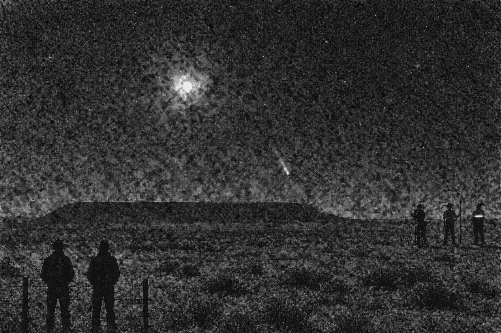
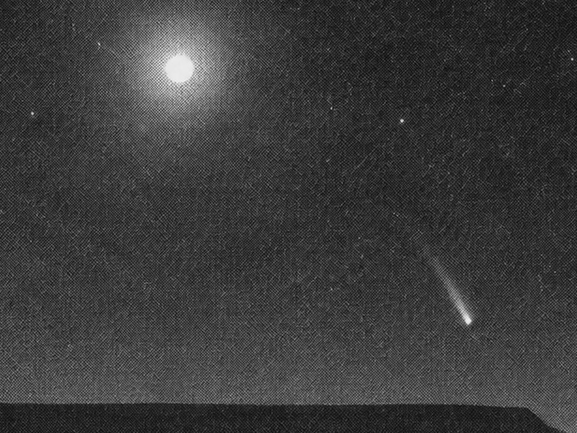
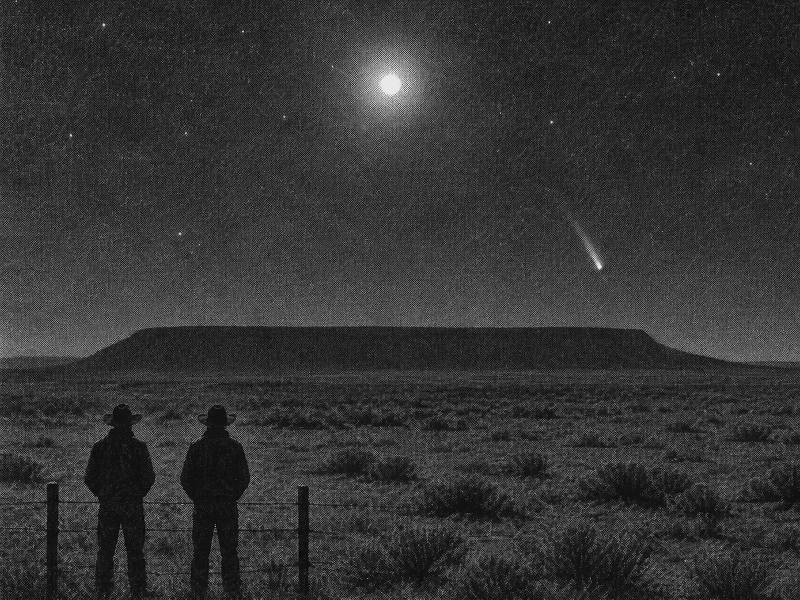
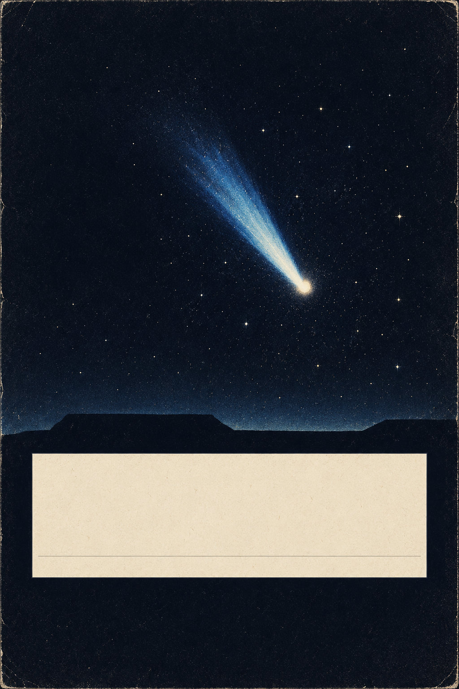
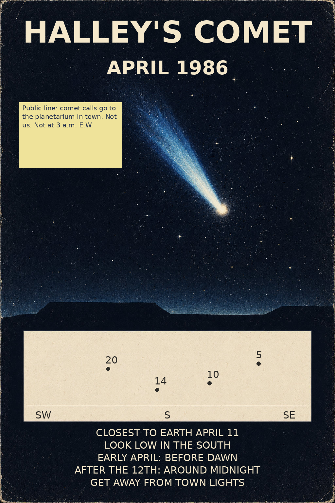
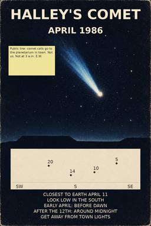
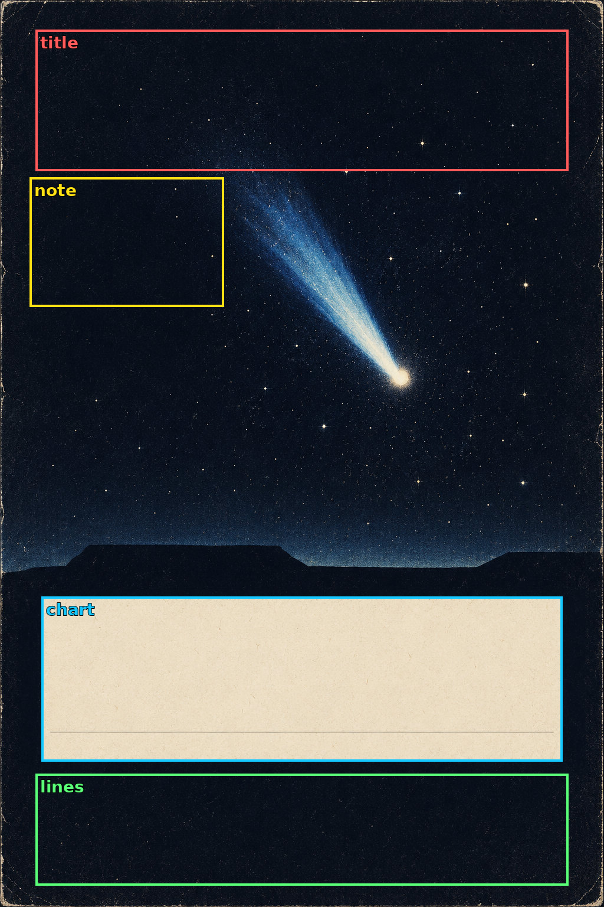
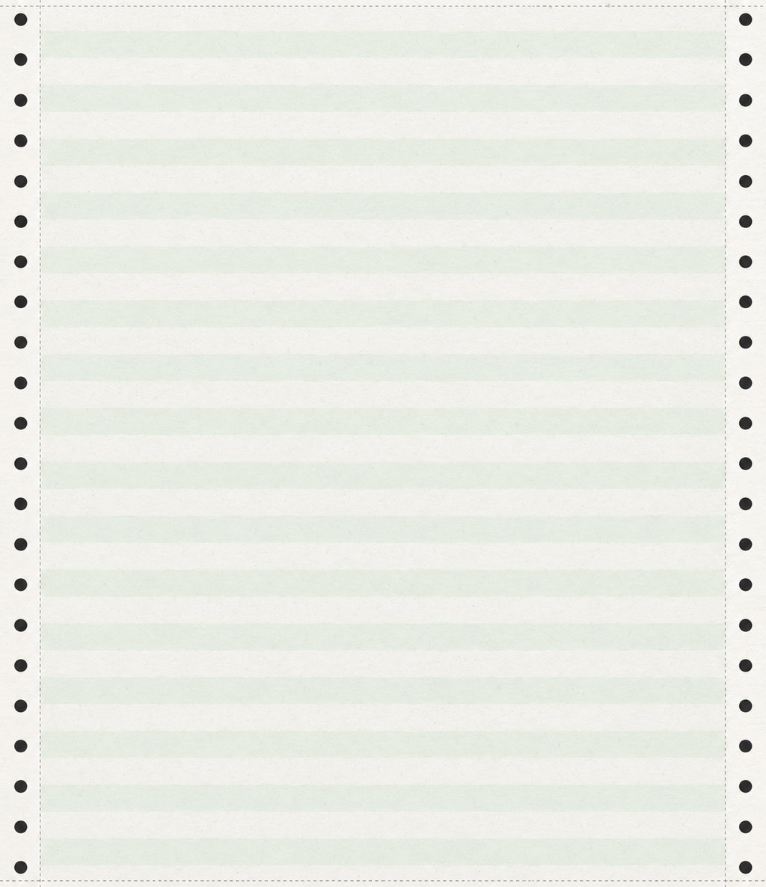
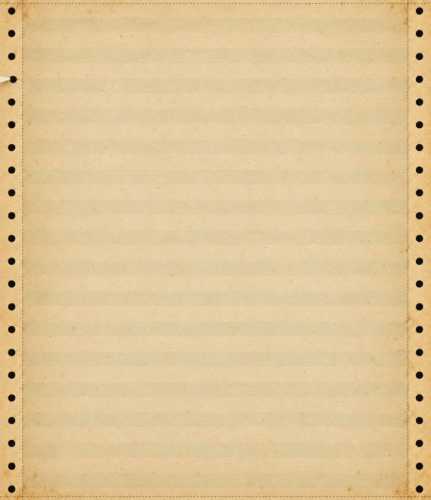
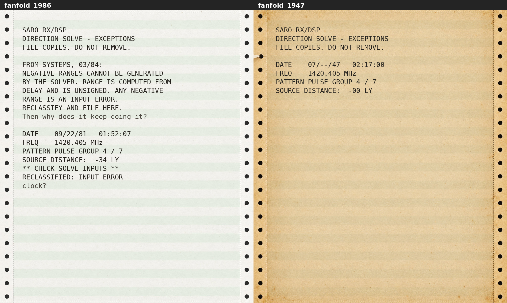

SIGNAL / 47 · Runde 10
Fire tekstfrie sluttbilder med egne kontrollvisninger. Dette er assetkontroll; Claude kobler inn bildene og tester spillet.
Manifest og opphav · Formatkontroll · Visuell vurdering · Uavhengig kontroll
Ett avisfoto, tre utsnitt

C: Hele bildet, 2400×1600. Det samme bildet brukes ved alle tre visninger.

A: Saksmappas tette utsnitt.
B: Dinerens bredere utsnitt.Kontroller Bs høyre kant og de tre rammene
Halley-plakaten

Tekstfri sluttfil, 1024×1536.
Kontroll med prøvetekst. Endelig tekst tegnes av Claude.Se 256×384 og skrivefeltene

Lappens og kartets småtekster leses i dokumentvisningen.
Fanfold: samme format, eldre papir bakerst

1986 · 22 hull per side.
1947 · samme radplassering, ett revnet hull.Les prøveteksten på begge ark
